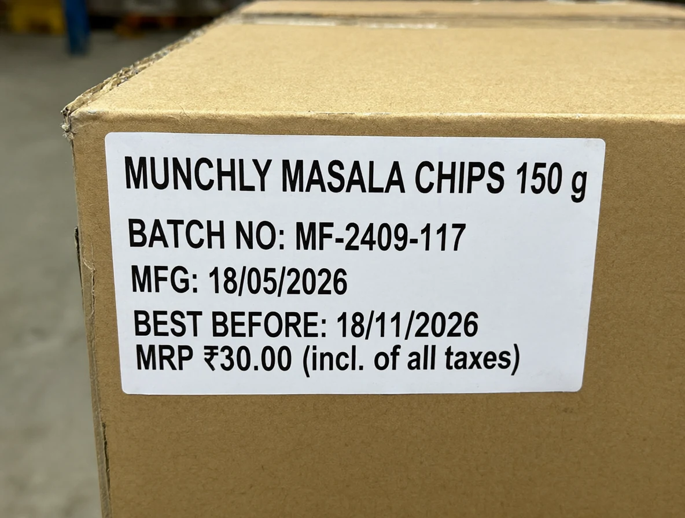
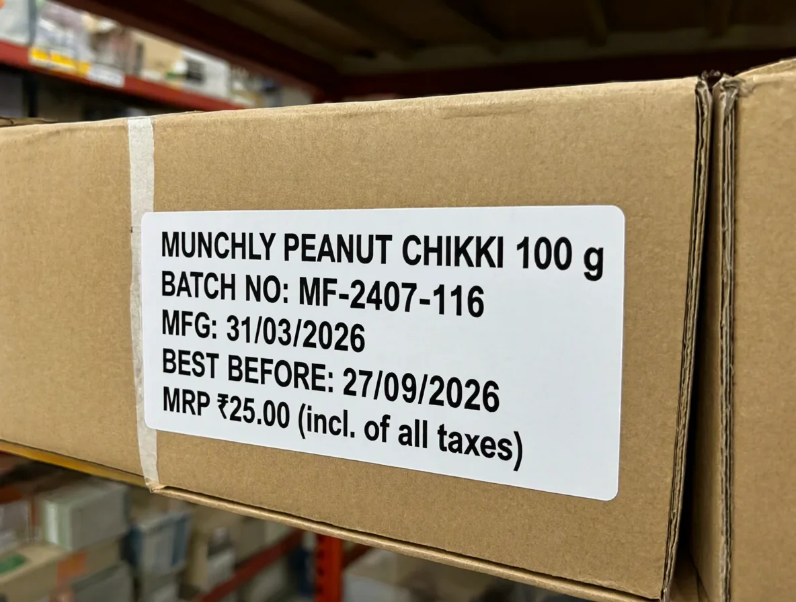
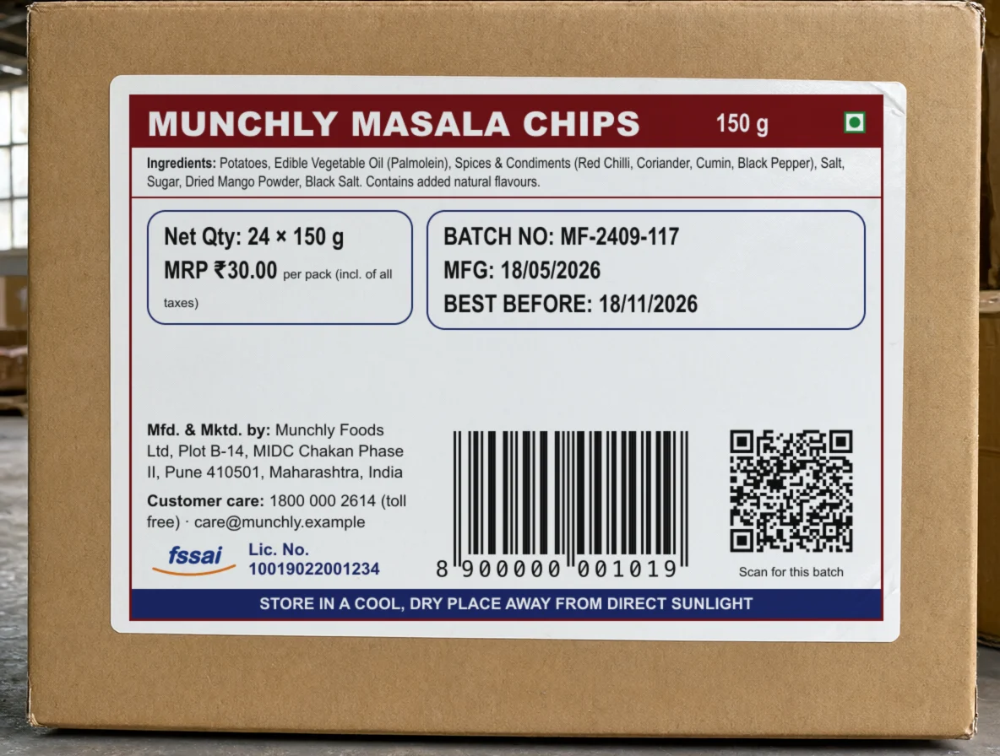
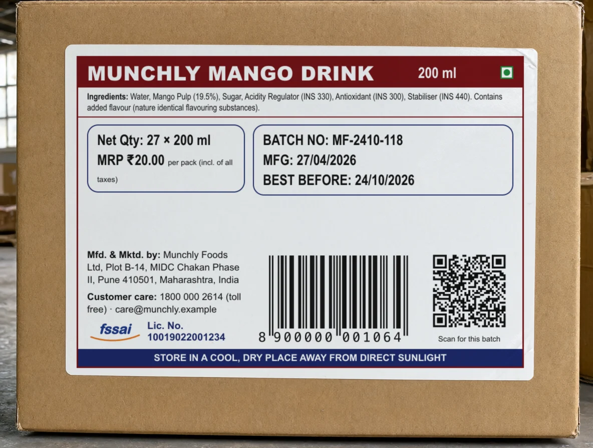
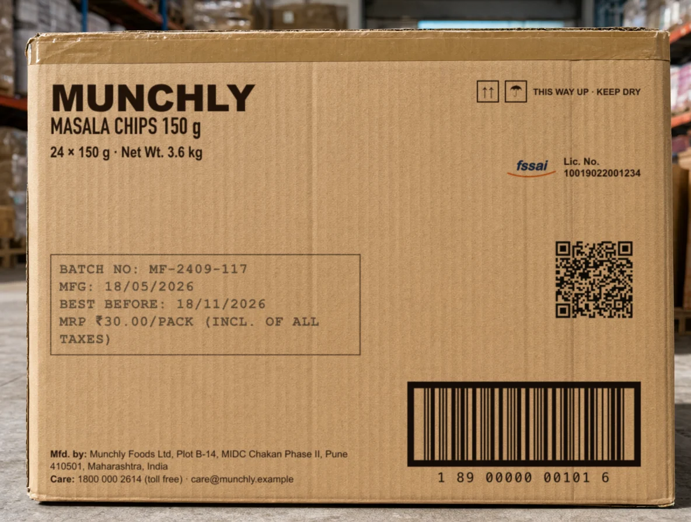
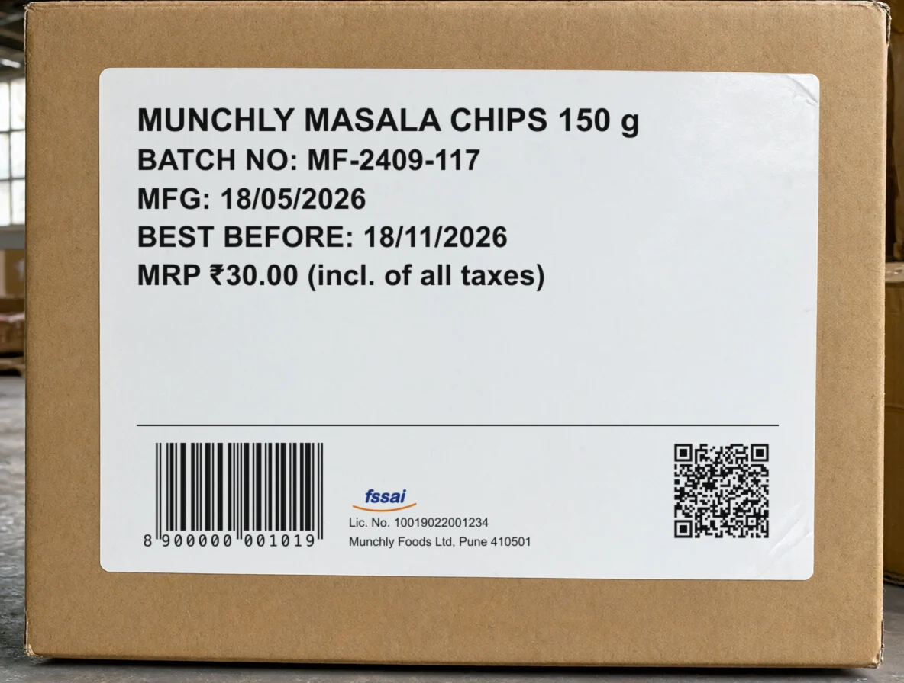

Carton labels
SC-147 · Munchly's workspace · three ways for the label photo a distributor sends to look like a real carton's label: a barcode, a QR code and the FSSAI licence, with the batch, its dates and the MRP Vision reads.
The maintainer (10 Oct), with a photo of a real snack label for reference:
- “Food labels uploaded should have FSSAI approved bar code and QR code on the cartons. This should updated for all past batches and orders on Munchly.”
- “I need you to update all images and invoices as needed for all past and present batches.”
The GST bills and invoices are the same request's second part, on their own board: SC-148.
What the labels show today
Five lines: the product, the batch, the made and best-before dates, the MRP. No barcode, no QR code, no FSSAI licence, no maker's address. Every photo Munchly's workspace holds reads this way: the 12 batches cleared since July and the Masala Chips. The Mango Drink has no photo of its own yet.


In every option
The options
Option A · The full statutory sticker
RecommendedA printed sticker like the reference: the product in a band with the veg mark, the ingredients, the net quantity and MRP boxed, the batch and its dates boxed, the maker and customer care, the FSSAI licence, the pack's EAN-13 and the batch's QR code, and the storage line.
- Trade-offs
- Reads as the label the maintainer sent: every field a pack's label carries.
- The batch and its dates stay large, in their own box, so Vision reads them as easily as today.
- The busiest of the three: the most for Vision to look past.


Option B · The printed shipper carton
No sticker: the carton itself, printed in one colour at the factory (the brand, the product, 24 × 150 g, handling marks, the FSSAI licence, the maker), with the carton's ITF-14 and the batch's QR code, and the batch, its dates and MRP inkjet-coded into a box on the line.
- Trade-offs
- How most shipper cartons in a godown actually look: an ITF-14 is the code a carton carries.
- The inkjet dot type is harder to read than a sticker, a more honest test of Vision.
- No ingredients (they are on each pack inside), and it looks least like the reference.

Option C · Today's label with a coded foot
Today's five lines as they are, with a foot added: the pack's EAN-13, the FSSAI licence with the maker, and the batch's QR code.
- Trade-offs
- Changes least: Vision reads the same five lines it reads now.
- Still no ingredients, net quantity or customer care: less like the reference.

Side by side
| A · The full statutory sticker | B · The printed shipper carton | C · Today's label with a coded foot | |
|---|---|---|---|
| Barcode | EAN-13, the pack's | ITF-14, the carton's | EAN-13, the pack's |
| QR code | The batch's Digital Link | The batch's Digital Link | The batch's Digital Link |
| FSSAI | The mark and licence, the maker and customer care | The mark and licence, the maker | The mark and licence, the maker's town |
| Ingredients, net quantity | Yes | Net weight only | No |
| For Vision | The batch and dates boxed, large | Inkjet dots, harder | As today |
What the build changes, whichever is picked
Recommended: option A
The full statutory sticker is the label the request describes: the barcode, the QR code and the FSSAI licence, with every field a food label carries, and the batch and its dates kept large in their own box, so Vision's reading is no harder than today.
To decide
- Which option to build.
- Whether Vision's 71 other eval photos should change too (recommended: no).